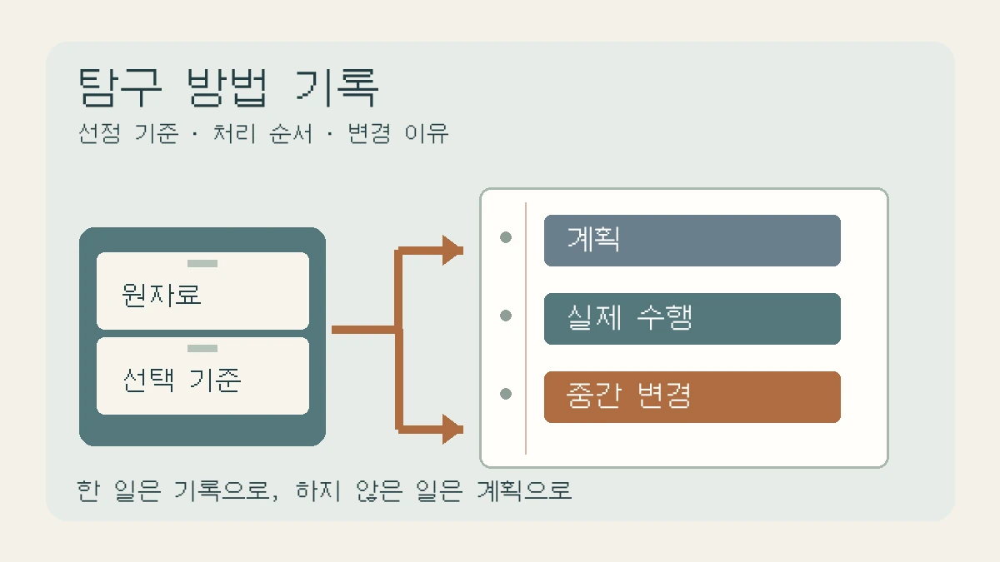

탐구 방법에 무엇을 써야 할까? 조사했다는 말에서 절차가 보이는 문단으로
자료를 조사하고 분석했다는 문장에 빠진 선정 기준·처리 순서·변경 이유를 찾습니다. 가상 안내문 비교의 수정 전후 문단과 계획·수행을 나누는 방법 카드로 안내합니다.

“인터넷에서 자료를 조사하고 비교·분석하였다.” 방법 문단을 이렇게 마쳤다면, 자료를 많이 읽었어도 독자는 무엇을 어떻게 비교했는지 알기 어렵습니다. 반대로 검색한 날짜와 클릭 순서를 모두 적으면 중요한 선택이 묻힙니다.
이번 칼럼은 이미 한 조사에서 선택 기준과 처리 절차를 꺼내 방법 문단으로 쓰는 작업을 다룹니다. 그래프 뒤의 결과 설명이나 결론의 한계 분석보다 앞선 단계입니다. 원래 메모·저장한 자료·과제 안내를 펼쳐 놓으세요. 아래 순서는 편집팀의 작성 제안이며, 학교가 정한 양식이나 채점 기준을 대신하지 않습니다.
‘어디서 찾았나’ 다음에 ‘어떻게 골랐나’를 쓰세요
USC 도서관의 방법론 안내는 자료를 어떻게 수집하거나 만들었는지, 어떻게 분석했는지와 그 절차를 택한 이유를 설명하도록 안내합니다.[1] 고교 보고서에서는 어려운 방법론 이름을 붙이기보다, 독자가 실제 작업의 범위를 확인할 수 있게 쓰는 연습으로 적용해 보세요.
먼저 이번 문단이 뒷받침할 질문을 좁힙니다. ‘환경 문제를 알아본다’보다 ‘학교 분리배출 안내문에서 배출 대상과 예외 조건은 어떻게 표현되는가’처럼 자료에서 확인할 대상을 정합니다. 이 질문이라면 안내문을 비교할 수 있지만, 안내문만 보고 실제 분리배출 행동이 개선됐다고 판단할 수는 없습니다.
문헌 조사도 방법이 있습니다. 사용한 사이트 이름만 적지 말고 검색어·검색 범위·포함 기준·제외 이유·비교 항목을 자신의 기록에서 찾으세요. 정교한 검색식을 미리 쓰지 않았다면 나중에 만든 검색식을 당시 사용한 것처럼 쓰지 않습니다. ‘초기 탐색에서는 검색어를 따로 기록하지 않았다’는 설명이 허구의 절차보다 정확합니다.
교육용 가상 사례: 안내문 두 건을 비교하는 방법
다음 A·B 안내문과 학생의 작업 상황은 편집팀이 만든 교육용 가상 사례입니다. 실제 학교 문서나 수행 결과가 아닙니다. 같은 학기에 사용된 교내 분리배출 안내문 두 건을 보관했고, ‘배출 대상·예외 조건·행동 지시’가 문장에 드러나는지 비교했다고 가정합니다. 실제 학생은 접근·이용이 허용된 자신의 자료로 바꾸어야 합니다.
수정 전
환경 관련 자료를 인터넷에서 조사하고 두 안내문을 비교·분석했다. 객관적인 기준으로 분리배출 안내의 효과를 알아보았다.
여기에는 자료를 고른 범위가 없고 ‘객관적 기준’의 내용도 없습니다. 안내문을 읽은 일을 효과 검증으로 넓혔습니다. 작업 메모에서 실제 확인할 수 있는 선택만 남겨 고칩니다.
수정 후 · 가상 수행 상황의 방법 문단
학교 분리배출 안내문에서 배출 대상과 예외 조건을 어떻게 제시하는지 살펴보았다. 같은 학기에 사용된 안내문 A와 B를 비교 대상으로 삼고, 배출 대상·예외 조건·행동 지시의 명시 여부를 문장별로 기록했다. 이때 예외 조건은 ‘일반적인 지시와 달리 처리해야 하는 경우를 따로 밝힌 표현’으로 정했다. 해당 표현이 있는 문장과 위치를 비교표에 옮기고, 판단하기 어려운 문장은 별도 표시했다. 개인 이름과 연락처는 비교표에서 제외했다. 두 안내문을 임의로 선택한 사례 비교이므로 모든 안내문의 특징이나 실제 배출 행동의 변화를 검증한 것은 아니다.
수정 후 문단은 더 많은 연구를 했다고 주장하지 않습니다. 대상을 고른 범위, 같은 기준으로 읽은 방법, 애매한 자료의 처리, 말할 수 없는 범위를 드러냅니다. ‘명시 여부’만 기록했다면 문장의 친절함이나 학생의 이해도를 측정했다고 덧붙이지 마세요. 안내문 선정 이유가 단지 확보 가능했기 때문이라면 그 이유도 그대로 적습니다.
비교 기준은 이름만 말하지 말고 적용 규칙을 남기세요
위 가상 사례에서 ‘예외 조건이 있다’고 표시하려면 어떤 표현을 예외로 세었는지 정해야 합니다. ‘깨끗이 배출하세요’는 일반 지시로, ‘내용물이 남아 있으면 비운 뒤 배출하세요’는 조건이 붙은 지시로 읽는 연습을 할 수 있습니다. 두 문장 역시 편집팀의 자작 예문이며 공식 분리배출 지침이 아닙니다. 품목별 실제 배출법은 해당 지역의 공식 안내를 따로 확인해야 합니다.
기준을 적용하기 애매하면 원문과 판단 이유를 함께 남기세요. 다른 사람이 다시 읽었을 때 같은 판단을 할 수 있는지 점검할 자리입니다. 혼자 읽었는데 ‘연구자 간 일치도를 확인했다’고 쓰거나, 별도 검토 없이 ‘신뢰도를 확보했다’고 선언하지 않습니다. 기준이 구체적이라는 사실과 그 기준의 타당성이 검증됐다는 주장은 다릅니다.
방법을 배우려고 자료를 다시 찾을 때는 교과서의 자료 수집·내용 분석 단원에서 용어를 확인한 뒤, 실제 참고한 연구의 ‘연구 대상·자료 선정·분석 방법’ 항목을 읽어 보세요. 그 연구의 대상과 자신의 자료가 다른데 절차를 통째로 복사하지 않습니다. USC 안내의 ‘Content’ 항목도 자료 선택과 처리·분석 절차를 구분해 설명합니다.[1] 참고한 정의나 분석 틀이 있다면 문서명과 쪽수 또는 소제목을 적고, 자신이 바꾼 부분을 따로 밝히세요.
계획·실제 수행·중간 변경을 한 문장에 섞지 마세요
방법 초안 옆에 세 칸을 만들어 보세요. ‘하려던 일’에는 계획을, ‘실제로 한 일’에는 기록으로 확인되는 수행을, ‘바꾼 일’에는 시점과 이유를 적습니다. 완료 보고서라면 실제 수행이 중심이고, 계획서라면 아직 하지 않은 절차를 미래형으로 씁니다. 과제 종류를 먼저 확인해야 하는 이유입니다.
변경 기록 연습
처음에는 ‘좋은 안내문’을 평가하려 했지만 판단 규칙을 정하지 못했다. 자료를 읽는 중 질문을 ‘배출 대상과 예외 조건의 명시 방식’으로 좁혔다. 그 뒤 수정한 기준으로 A·B를 모두 다시 읽었다고 가정한다. 따라서 이 기준은 자료를 보기 전에 확정한 것이 아니라 탐색 중 조정한 기준이라고 방법에 밝힌다.
이 역시 가상 작업 기록입니다. 실제로 다시 읽지 않았다면 마지막 수행을 가져다 쓰면 안 됩니다. 기준을 중간에 바꾼 것 자체를 숨기기보다, 무엇을 언제 왜 바꾸었고 이전 자료에도 다시 적용했는지 확인하세요. 유리한 사례만 남겼다면 선택 이유와 빠진 자료를 재검토해야 합니다.
ORI의 자료 수집 안내는 기록이 실제로 한 작업과 얻은 결과를 문서화해야 하며, 기록을 바꿀 때 날짜와 이유를 남기도록 설명합니다.[2] 학교 보고서에서는 원본을 보관하고 수정본에 날짜·이유를 남기는 방식으로 적용할 수 있습니다. 연구기관의 노트 관리 절차 전체를 모든 학교 과제의 의무 규정으로 제시하는 것은 아닙니다.
실험·문헌·설문에서 필요한 세부사항은 다릅니다
모든 방법 문단을 같은 빈칸으로 채울 필요는 없습니다. 실험이라면 사용한 재료·도구·측정 단위·처리 조건·반복 방식이 실제 기록과 맞아야 합니다. 동일 시료의 반복 측정과 서로 다른 시료를 여러 개 측정한 일도 구분합니다. 문헌 비교라면 판본·자료 범위·선정 기준·읽은 항목이 더 중요할 수 있습니다.
설문이라면 누구에게 어떤 경로로 요청했고 실제 응답자는 누구인지, 사용한 문항과 무응답을 어떻게 처리했는지를 남겨야 합니다. 다만 이 글을 따라 새 설문이나 녹음을 바로 시작하지는 마세요. 조사 필요성과 학교 안내, 참여 동의·개인정보 처리부터 담당교사와 확인하세요. ORI도 자료 수집·이용에 허락이 필요한지 불확실하면 진행 전에 확인하도록 안내합니다.[2] 학생 이름·건강정보·연락처를 공개 보고서에 넣거나 공개 AI 서비스에 올릴 필요는 없습니다.
자세히 쓴 방법도 부적절한 설계를 자동으로 고쳐 주지는 않습니다. 편의상 고른 사례라면 대표성에 한계가 있고, 원래 기록하지 않은 조건은 사후에 복원할 수 없을 수 있습니다. 방법에는 선택과 절차를, 결과에는 관찰을, 논의에는 그 선택이 해석을 어떻게 제한하는지 나누어 쓰세요.
오늘 남길 산출물: 방법 카드 한 장과 수정 문단
자신의 보고서에서 ‘조사하고 분석했다’가 들어간 문장 하나를 고르고 아래 카드를 채우세요. 괄호를 채울 자료가 없으면 ‘미기록’이나 ‘재확인 필요’라고 남깁니다.
- 질문과 수행 상태: 무엇을 확인하려 했나? 계획인가, 완료한 작업인가?
- 대상과 범위: 어떤 자료·시료·응답자를 골랐나? 기간·판본·선정 이유는 무엇인가?
- 적용 기준: 무엇을 어떤 뜻으로 정의했고, 어떤 항목을 비교하거나 측정했나?
- 처리 순서: 원자료에서 비교표·집계·분석으로 어떻게 옮겼나? 애매하거나 빠진 자료는 어떻게 두었나?
- 변경과 근거 위치: 언제 무엇을 왜 바꾸었나? 원기록·문항·파일·쪽수는 어디에 있나?
- 남은 한계: 이 절차로 확인하지 않은 것은 무엇인가?
그다음 “___를 확인하기 위해 ___를 대상으로 삼았다. ___를 기준으로 ___ 순서로 정리했다. 도중에 ___를 바꾸었으며 이유는 ___였다. 다만 ___는 확인하지 않았다”를 자기 기록에 맞게 고칩니다. 변경이 없었다면 변경 문장은 빼세요. 마지막으로 친구가 이 문단만 읽고 대상과 절차를 짚을 수 있는지 물어보면 누락을 찾을 수 있습니다. 이는 읽기 점검이지 재현 실험이나 방법의 검증 완료가 아닙니다.
이 카드는 학생 자신의 작성 연습용입니다. 교사 세특 문장을 대신 만들거나 수행하지 않은 활동을 채우는 도구가 아닙니다. 성적·입시 결과·검색 노출을 보장하지 않습니다.
함께 읽을 글과 참고자료
보고서 전체 순서는 탐구보고서 대표 작성 가이드로 연결하세요. 방법을 쓴 뒤 자료 사이의 판단이 막히면 요약을 분석으로 고치는 세 질문, 관찰을 본문으로 옮기기 어렵다면 표·그래프와 설명 문단 연결법을 이어 읽을 수 있습니다. 이번 글은 그 결과가 만들어진 절차를 남기는 데 역할을 한정합니다.
2026년 11월 7일 아래 원문을 직접 확인했습니다. 방법 설명과 기록 원칙만 참고했으며, 안내문·수정 문단·변경 기록·방법 카드는 편집팀의 독립적인 교육 예시입니다. 실제 자료 조사나 학생 활동을 수행한 결과가 아닙니다.
- [1] USC Libraries — 6. The Methodology: ‘Definition’, ‘Content’의 자료 선택·처리·분석 절차 설명. 대학 사회과학 글쓰기 안내를 고교 공통 양식으로 간주하지 않았습니다.
- [2] ORI — Data collection: ‘Recording’의 실제 작업 기록과 변경 이유, ‘Authorized’의 사전 확인 원칙.
이 칼럼은 운영자의 관점과 일반 교육 정보를 담고 있으며 특정 대학 합격이나 평가 결과를 보장하지 않습니다.
함께 볼 글

탐구보고서 쓰는 법: 형식 6요소와 서론·본론·결론 실제 예시NEW
탐구보고서의 기본 구조 6요소와 작성 순서, 한 가지 가상 예시로 완성하는 서론·본론·결론 문장, 하루 30분씩 5일 작성 계획과 수정 기록 방법을 정리한 대표 작성 가이드입니다.
탐구보고서 자기점검 루브릭: 질문·방법·근거·한계로 고쳐 쓰기NEW
대학의 공식 평가표가 아닌 사이트 자체 자기점검 기준으로, 보고서의 빈칸을 찾고 수정 우선순위를 정합니다.